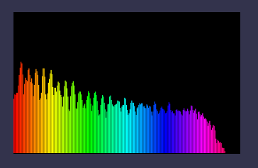
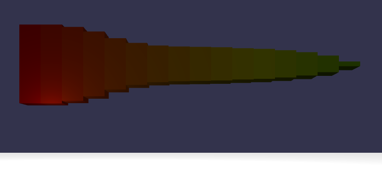

Babylon.js sound engine is based on the Web Audio specification. We decided not to offer a fallback on the audio tag or other mechanism. So, to use our sound engine, you need to use a Web Audio compatible browser. Still, if you’re using it on not compatible browser, it won’t break the rest of our engine, it will simply play no sound. The sound engine offers ambient sound, spatialized sound and directional sound. It can be created by code or by loading a .babylon file. It follows the simple & powerful philosophy of the rest of the engine as you’re going to see. The sound format supported is the one from the browser. It’s usually at least .mp3 and .wav.
Note: all music samples demonstrated in the playground has been composed by David Rousset
Here is the code to create a sound or music playing as ambient (not spatialized):
// Load the sound and play it automatically once ready
var music = new BABYLON.Sound("Music", "music.wav", scene, null, { loop: true, autoplay: true });
You can test this first sample into our playground:
http://www.babylonjs-playground.com/#PCY1J -
Calling the BABYLON.Sound() constructor with an URL generates 2 phases:
Here is a sample code:
var music = new BABYLON.Sound("Music", "music.wav", scene,
function () {
// Sound has been downloaded & decoded
music.play();
}
);
This code loads the “music.wav” file from the web server, decode it and play it in the callback function only once using the play() function. The play function plays the sound immediately if no parameter is passed. You can provide a parameter of type number to play the sound after x seconds.
Test it on our playground:
http://www.babylonjs-playground.com/#PCY1J#1 -
This sample code play a gunshot sound if you’re left-clicking or pressing the spacebar:
var gunshot = new BABYLON.Sound("gunshot", "sounds/gunshot.wav", scene);
window.addEventListener("mousedown", function (evt) {
// left click to fire
if (evt.button === 0) {
gunshot.play();
}
});
window.addEventListener("keydown", function (evt) {
// Press space key to fire
if (evt.keyCode === 32) {
gunshot.play();
}
});
Test it on our playground:
http://www.babylonjs-playground.com/#PCY1J#4 -
You can set the volume of a sound via the options object or via the setVolume() function. You can set the play rate in the same manner.
You can also be notified when the sound has finished playing by registering yourself into the onended event.
Here is a simple sample code mixing all that:
var volume = 0.1;
var playbackRate = 0.5;
var gunshot = new BABYLON.Sound("Gunshot", "./gunshot-1.wav", scene, null, { playbackRate: playbackRate, volume: volume });
gunshot.onended = function () {
if (volume < 1) {
volume += 0.1;
gunshot.setVolume(volume);
}
playbackRate += 0.1;
gunshot.playbackRate = playbackRate;
};
The sound is first created with a playbackRate of 0.5 and a volume of 0.1. Everytime you will play the sound, at its end, the onended function will be called and the volume & playbackRate will increase.
Rather than setting the volume on a specific sound, you can also set the global volume of all sounds played by Babylon.js using the setGlobalVolume() function of the audio engine.
BABYLON.Engine.audioEngine.setGlobalVolume(0.5);
For that, you need to call the play method on all sounds only once you’re sure they are all ready to be played. You then need to work with the ready to play callback.
var music1 = new BABYLON.Sound("Violons11", "sounds/violons11.wav", scene,
soundReady, { loop: true });
var music2 = new BABYLON.Sound("Violons18", "sounds/violons18.wav", scene,
soundReady, { loop: true });
var music3 = new BABYLON.Sound("Cellolong", "sounds/cellolong.wav", scene,
soundReady, { loop: true });
var soundsReady = 0;
function soundReady() {
soundsReady++;
if (soundsReady === 3) {
music1.play();
music2.play();
music3.play();
}
}
Test it on our playground:
http://www.babylonjs-playground.com/#PCY1J#6 -
You can bypass the first phase (the embedded XHR request) if you’re calling the constructor with your own provided ArrayBuffer.
Here is a sample code demonstrating it:
var gunshotFromAB;
loadArrayBufferFromURL("sounds/gunshot.wav");
function loadArrayBufferFromURL(urlToSound) {
var request = new XMLHttpRequest();
request.open('GET', urlToSound, true);
request.responseType = "arraybuffer";
request.onreadystatechange = function () {
if (request.readyState == 4) {
if (request.status == 200) {
gunshotFromAB = new BABYLON.Sound("FromArrayBuffer", request.response, scene, soundReadyToBePlayed);
}
}
};
request.send(null);
}
function soundReadyToBePlayed() {
gunshotFromAB.play();
}
Test it on our playground:
http://www.babylonjs-playground.com/#PCY1J#2 -
The assets manager is pretty useful as it handles for you some great features such as a loading screen.
var music1, music2, music3;
// Assets manager
var assetsManager = new BABYLON.AssetsManager(scene);
var binaryTask = assetsManager.addBinaryFileTask("Violons18 task", "sounds/violons18.wav");
binaryTask.onSuccess = function (task) {
music1 = new BABYLON.Sound("Violons18", task.data, scene, soundReady, { loop: true });
}
var binaryTask2 = assetsManager.addBinaryFileTask("Violons11 task", "sounds/violons11.wav");
binaryTask2.onSuccess = function (task) {
music2 = new BABYLON.Sound("Violons11", task.data, scene, soundReady, { loop: true });
}
var binaryTask3 = assetsManager.addBinaryFileTask("Cello task", "sounds/cellolong.wav");
binaryTask3.onSuccess = function (task) {
music3 = new BABYLON.Sound("Cello", task.data, scene, soundReady, { loop: true });
}
var soundsReady = 0;
function soundReady() {
soundsReady++;
if (soundsReady === 3) {
music1.play();
music2.play();
music3.play();
}
}
assetsManager.load();
Test it on our playground:
http://www.babylonjs-playground.com/#PCY1J#8 -
To transform a sound into a spatial sound, you need to specify that via the options:
var music = new BABYLON.Sound("music", "music.wav",
scene, null, { loop: true, autoplay: true, spatialSound: true });
Default properties of a spatial sound are:
maxDistance is only used when using the “linear” attenuation. Otherwise, you can tune the attenuation of the other models using the rolloffFactor and refDistance options. Both are set to 1 by default but you can change it of course.
For instance:
var music = new BABYLON.Sound("music", "music.wav",
scene, null, {
loop: true, autoplay: true, spatialSound: true,
distanceModel: "exponential", rolloffFactor: 2
});
Default position of sound in the 3D world is (0,0,0). To change that, use the setPosition() function:
music.setPosition(new BABYLON.Vector3(100, 0, 0));
To have a better understanding, please have a look to this sample into our playground:
http://www.babylonjs-playground.com/#2AH4YH -
Move into the scene using keyboard & mouse. Each sound is represented by a purple sphere. When you’re entering a sphere, you’ll start hearing one the music. The sound is louder at the center of the sphere and fall down to 0 when leaving the sphere.
This is probably the simplest way to handle 3D sounds in your scene. Simply create a BABYLON.Sound, attach it to an existing mesh and you’re done! If the mesh is moving, the sound will move with it. You have nothing to do.
Here’s the code to use:
var music = new BABYLON.Sound("Violons", "sounds/violons11.wav", scene, null, { loop: true, autoplay: true });
// Sound will now follow the box mesh position
music.attachToMesh(box);
Calling the attachToMesh() function on a sound will transform it automatically into a spatial 3D sound. Using the above code, you’ll fall into default Babylon.js values: a linear attenuation with a maxDistance of 100 and a panning model of type “HRTF”.
Put your headphone and launch this sample into our playground:
http://www.babylonjs-playground.com/index.html?23
By default, spatial sounds are omnidirectional. But you can have directional sounds if you’d like to.
Note: directional sounds only work for spatial sounds attached to a mesh.
Here is the code to use:
var music = new BABYLON.Sound("Violons", "violons11.wav", scene, null, { loop: true, autoplay: true });
music.setDirectionalCone(90, 180, 0);
music.setLocalDirectionToMesh(new BABYLON.Vector3(1, 0, 0));
music.attachToMesh(box);
setDirectionalCone takes 3 parameters:
Outer angle of the cone must be superior or equal to the inner angle, otherwise an error will be logged and the directional sound won’t work.
setLocalDirectionToMesh() is simply the orientation of the cone related to the mesh you’re attached to. By default, it’s (1,0,0).
You can play with this sample from our playground to better understand the output:
http://www.babylonjs-playground.com/#1BO0YS -
Move into the 3D scene. If you’re inside the space defined by the grey cone, you should hear the music, if not you’ll not hear it as the coneOuterGain is set to 0.
If you want to manage the attenuation (or distance model in Web Audio) using a specific algorithm, you can by-pass the native Web Audio attenuation using Babylon.js custom attenuation function.
Note: Web Audio is “hardware accelerated”. It means it’s mainly handled by a dedicated audio chip on your device via native code (the browser). This then almost costs nothing on the performance side for 3D real-time rendering. Switching to custom attenuation will use Babylon.js distance computation based on JavaScript and will be slower.
Moreover, the custom attenuation will only works on spatial sounds (obviously) but also on sound connected to a Babylon.js mesh. That said, let’s now view the code to do that. First, you must specify it in the options:
// Create and load the sound async
var music = new BABYLON.Sound("Music", "music.wav", scene, null, { loop: true, autoplay: true, useCustomAttenuation: true });
You’ll switch to internal Babylon.js math computations. The default custom attenuation function is a linear one.
To create your own logic you need such code:
// Creating custom attenuation function. Near the object, volume is almost 0.
// The farest, the louder
music.setAttenuationFunction(function (currentVolume, currentDistance, maxDistance, refDistance, rolloffFactor) {
return currentVolume * currentDistance / maxDistance;
});
You can play with these 5 parameters and do whatever you’d like with it. Simply return a number that will be the volume applied to the sound.
In this example, the logic is a bit weird as the volume is louder the farther you are from the mesh. ;-)
Play with it in our Playground:
http://www.babylonjs-playground.com/#1YIXEO -
Moreover, Firefox has currently a bug in their Web Audio implementation in handling properly linear attenuation. This can be fixed by using the Babylon.js default linear custom attenuation.
Here’s a previous sample code that now works properly in Firefox:
http://www.babylonjs-playground.com/#2AH4YH#2 -
Our .babylon file format can describe the sounds to load. It’s documented here: http://doc.babylonjs.com/page.php?p=22661
Currently only our 3DS Max exporter can export sounds directly to .babylon.
To access to a sound loaded by the Babylon.js .babylon fileloader, you need to use the getSoundByName() function on the scene object.
Here is a simple sample loading a .babylon scene file embedding some sounds:
var canvas = document.getElementById("renderCanvas");
var engine = new BABYLON.Engine(canvas, true);
BABYLON.SceneLoader.Load("TestScene/", "testsound.babylon", engine, function (newScene) {
newScene.executeWhenReady(function () {
newScene.activeCamera.attachControl(canvas);
var gunshotSound = newScene.getSoundByName("gunshot-1.wav");
window.addEventListener("keydown", function (evt) {
if (evt.keyCode === 32 && gunshotSound) {
gunshotSound.play();
}
});
engine.runRenderLoop(function () {
newScene.render();
});
});
}, function (progress) {
// To do: give progress feedback to user
});
Pressing the spacebar will play the gunshot sound.
It could be useful to isolate your music & sounds on several tracks to better manage volume on a grouped instance of sounds. It will be also used in a future release to apply effects on a specific track.
By default, Babylon.js is creating a BABYLON.SoundTrack object to act as its main track. Every time you’re creating a new BABYLON.Sound, it’s added for you into this main track.
var soundTrack = new BABYLON.SoundTrack(scene);
soundTrack.AddSound(cellolong);
soundTrack.AddSound(violons11);
Using this code, the “cellolong” and “violons11” sounds will be moved from the main Babylon.js track to this specific sound track. This now means that you change the volume of this track, and thus of these 2 sounds, independently from the main track.
The AddSound() function will move the sound from its original container (the main track or a specific track) to the new sound track specified. For instance, with this code:
var soundTrack1 = new BABYLON.SoundTrack(scene);
soundTrack1.AddSound(cellolong);
soundTrack1.AddSound(violons11);
var soundTrack2 = new BABYLON.SoundTrack(scene);
soundTrack2.AddSound(violons11);
The “violons11” sound will finally live only in “soundTrack2”.
You can easily analyze in real-time the audio frequencies.
The easiest code to understand how it works is this one:
var myAnalyser = new BABYLON.Analyser(scene);
BABYLON.Engine.audioEngine.connectToAnalyser(myAnalyser);
myAnalyser.drawDebugCanvas();
This will connect to the global volume of the audio engine and will draw the frequencies of all sounds played together into a 2D canvas display on top of the screen.

You can change the position and size of the debug canvas and use an analyser on a sound track instead of the global audio engine:
var myAnalyser = new BABYLON.Analyser(scene);
soundTrack1.connectToAnalyser(myAnalyser);
myAnalyser.DEBUGCANVASSIZE.width = 160;
myAnalyser.DEBUGCANVASSIZE.height = 100;
myAnalyser.DEBUGCANVASPOS.x = 40;
myAnalyser.DEBUGCANVASPOS.y = 30;
myAnalyser.drawDebugCanvas();
You can also call yourself the analyser functions to create your own usage of it.
Here is a full sample:
http://www.babylonjs-playground.com/#PTV7W#1 -
